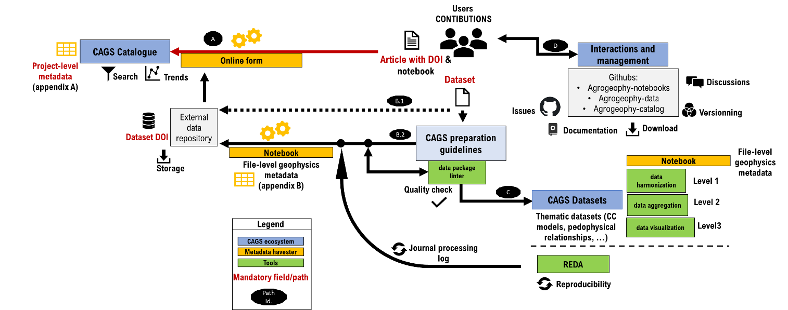

CAGS ecosystem¶
CAGS is an ecosystem with many interrelated projects and repositories:
- Catalog: a platform putting together a database/catalog of agrogeophysical surveys in order to boost future research
- Notebooks: a collection of jupyter notebooks that use agrogeophysical models
- Datasets: a list of agrogeophysical dataset of interest with associated metadata and references

{kind=link}
Fig. 1 Scheme describing the ecosystem of the CAGS collaborative platform and the different paths for user’s contribution. (Path A) Article and/or companion notebook submission to the catalogue (B.1) optional companion dataset (B.2) companion dataset complying with CAGS preparation guidelines. (C) the data preparation for a submission to the CAGS datasets for key parameters described in section 4.3). (D) all possible interactions and management of submissions. The CAGS dataset preparation guidelines are described in section 2.2. Two metadata harvesters are presented i.e. the project-level and the file-level geophysics one